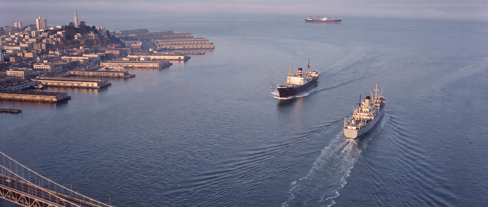
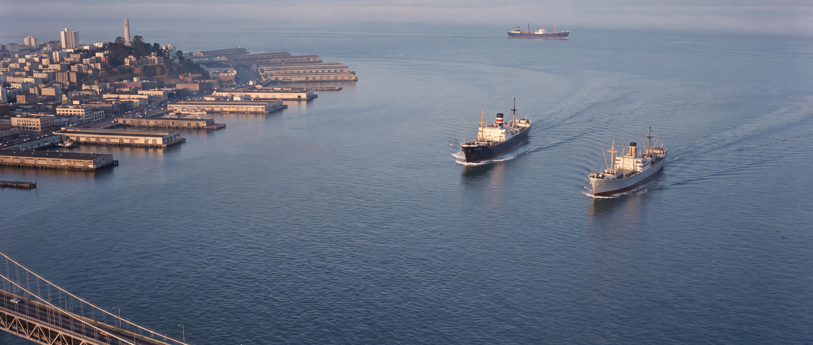
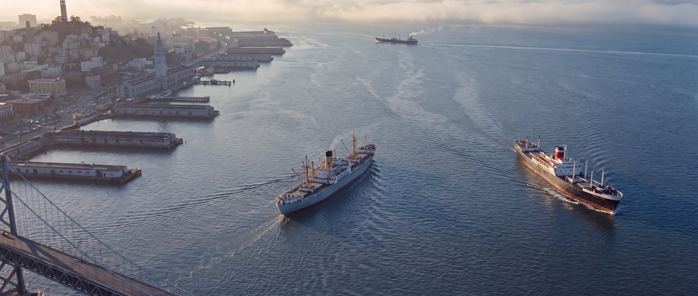
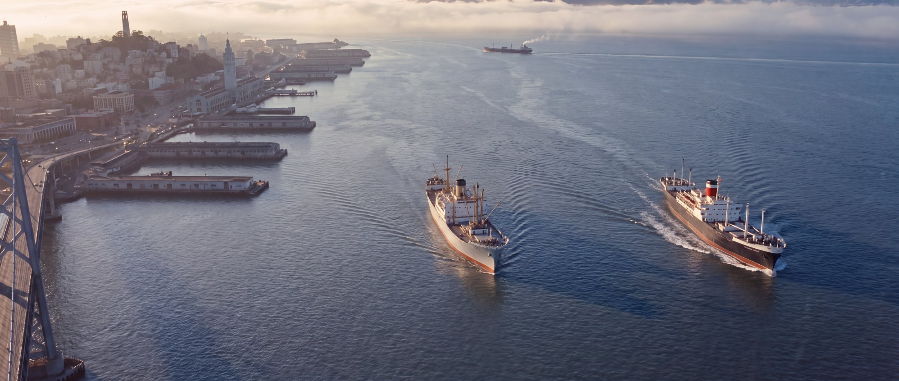
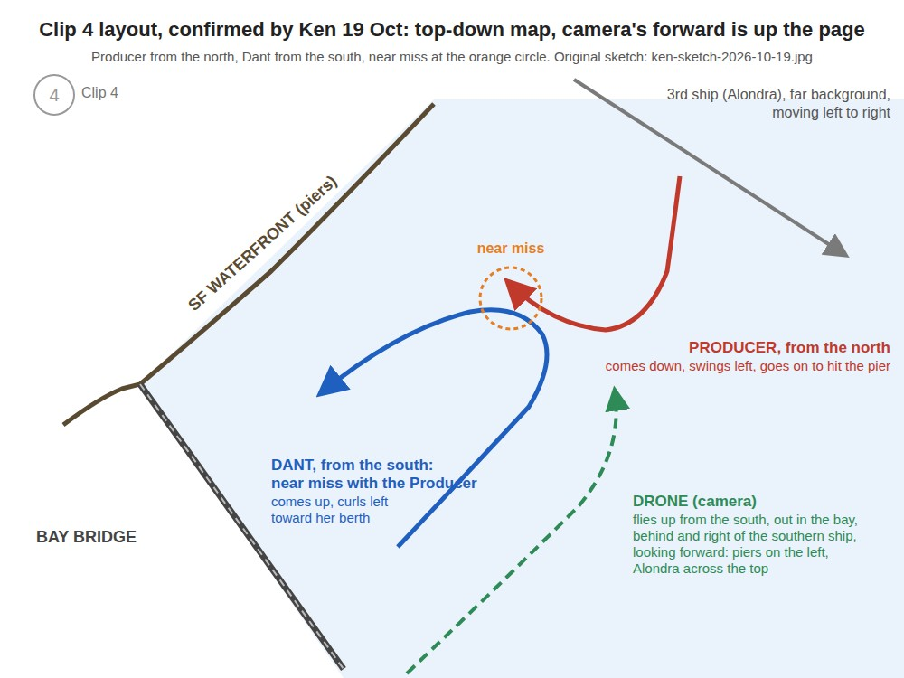

Revised from A — your changes
Both ships pushed well back with open water across the foreground, and the sides swapped. Producer on the LEFT coming toward the camera (we see her bow); Dant on the RIGHT heading away (we see her stern and her wake running back toward us), beginning to curl left. They then both turn left and come up side by side, the Producer's port to the Dant's starboard. A’s framing, piers, bridge and Alondra are unchanged.


Two earlier tries, for reference
Same layout, but both put the Dant bow-on toward the camera instead of heading away — the old mistake. Discarded.


Your drawing, as I read it

Waiting on you. Say go and I will render clip 4 as video from this still. Nothing else gets touched and the film is not reassembled until you say so.